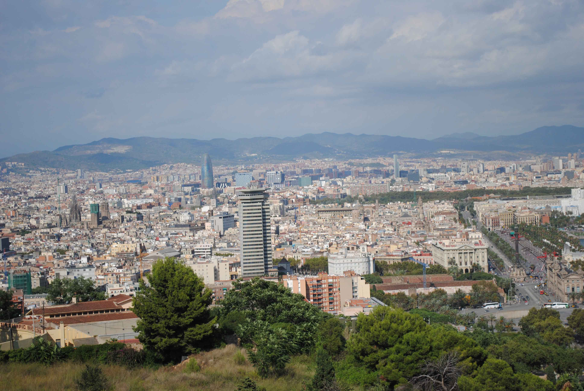
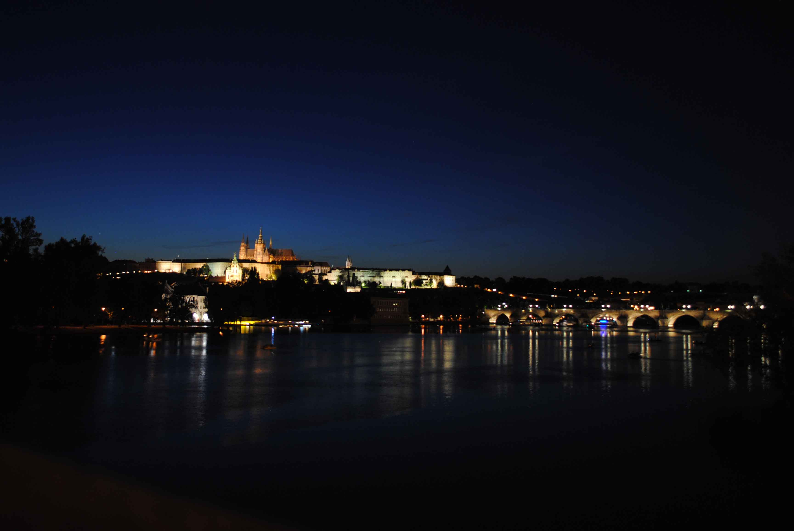
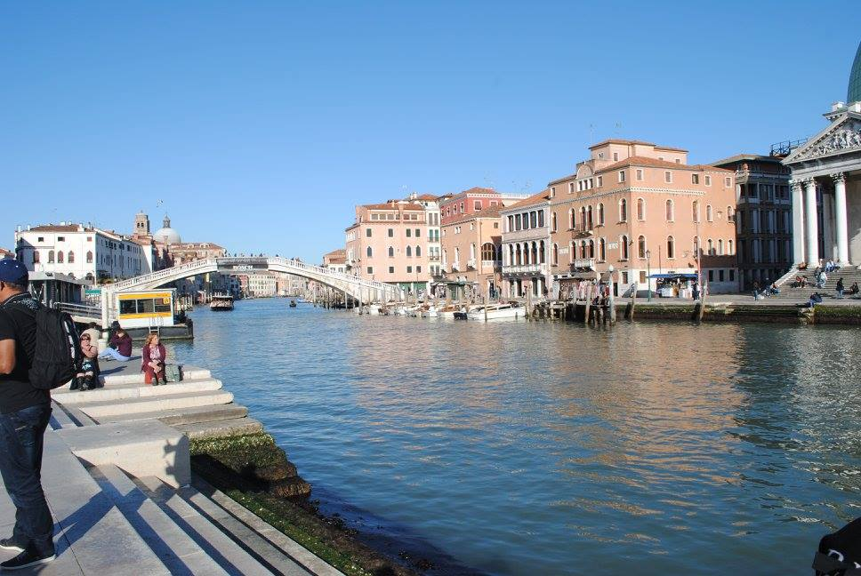
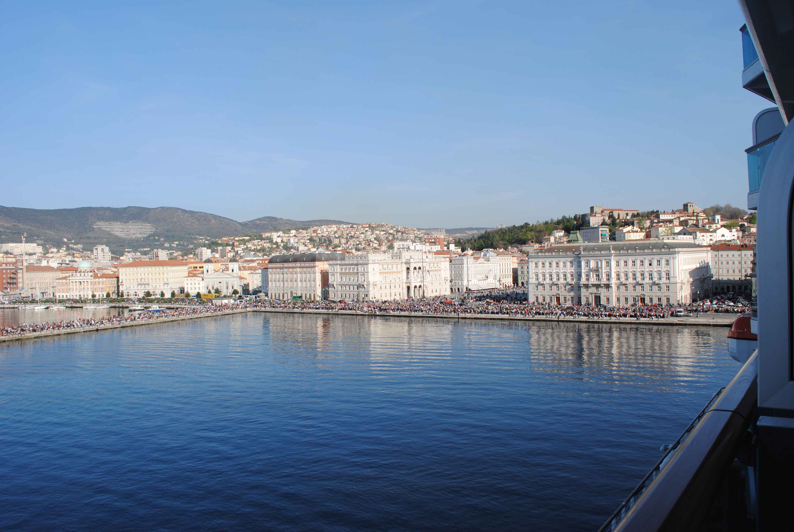
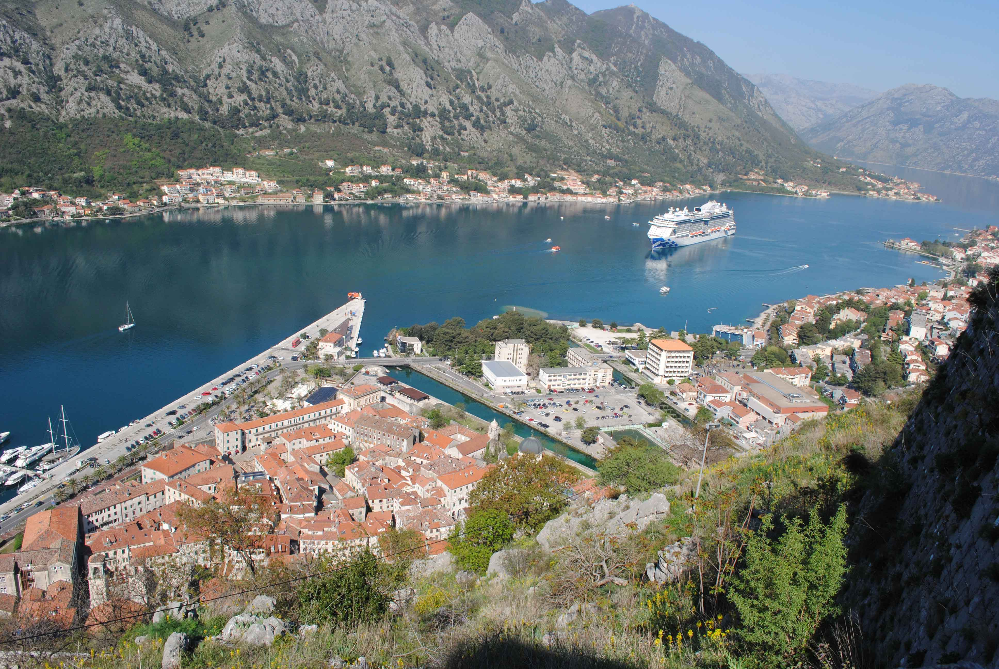
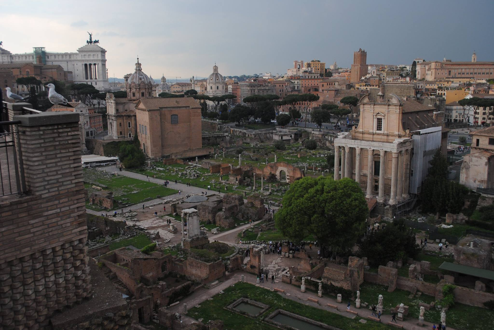
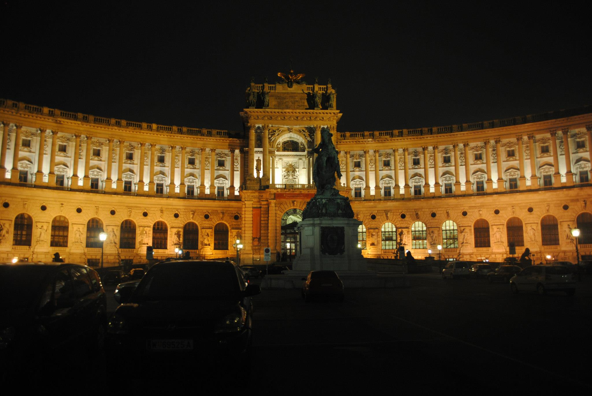

My blog
Despre mine
Sunt eu! Happy all the time, mereu cu zabetul pe buze.
Sunt casatorit, in asteptarea unui copil.
Locuiesc in Cluj si sunt unul dintre "bastinasi".
Sunt inginer in aparatura medicala lucrez la o firma de
aparatura medicala din Cluj, dar calatoresc in toata tara. Repar,
instalez scaune dentare si radiologie digitala stomatologica.
Am mai studiat limbaje de programare in cursuri on-line.
Stiu cate ceva din HTML si CSS. De asemenea imi place foarte mult
Python. JS nu prea l-am inteles si de aceea m-am inscris la curs.
Abia astept sa invat JS.
Hobby
Unul dintre hobby-urile mele este calatoria.
Nu imi place sa stau intr-un singur loc vreau sa vad cat mai mult din
lumea aceasta! Sa fac cat mai multe poze si sa imi fac cat mai multe amintiri.
Mai imi place sa inot si sa fac scubba. Pe langa frumusetile de
deasupra vreau sa vad si cat mai multe din frumusetile subacvatice.
Si binenteles cat mai multe poze si de acolo.
Calatorii
Barcelona
Spania
Super tare! Eu il consider cel mai FRUMOS oras pe care l-am vizitat. Ai de toate acolo OLD + NEW. Arhitectura unica in lume, cladiri vechi, cladiri noi, mare, munte, biserici.. si lista poate continua. Am fost de 3 ori cate 3 saptamani si m-as mai duce.
Praga
Cehia
Superb! Are arhitectura deosebita. Mancare este foarte buna, BEREA este mai ieftina ca si apa(si mai buna :))! Merita vazuta, preturi accesibile.
Croaziera
Este modul cel mai bun de a vizita cat mai multe orase. A fost prima mea croaziera, de scurta durata, pentru a vedea cum e, dar sigur nu va fi ultima. Am vizitat Venetia, Trieste, Kotor si Roma.
Venetia
Italia
Este un oras pe ape. Din punctul meu de vedere o singura data merita vizitat, nu mai mult. Romantic, dar din pacate prea multi turisti si prea multa mizerie.
Trieste
Italia
Un orasel mic frumos la malul marii, doar plimbari prin centru
Kotor
Muntenegru
In "fiordurile sudice ale Europei". Frumos, ca de altfel tot peisajul muntenegrean cu muntele care se ridica dintre ape.
Roma
Italia
Este un oras cu multa istorie, o capitala a vechiului Imperiu! Superb. Am constatat ca acum 2000 de ani romanii aveau ceea ce nu avem noi in Cluj astazi, un "aquapark" antic. Cu bai sarate, intins pe suprafete mari. Mai avem multe de invatat.
Viena
Austria
Am fost de mai multe ori si sper sa mai ajung. Cu toate ca este un oras frumos de fiecare data cand am fost am facut mai mult shopping. De vizitat doar "car trip" prin oras.
